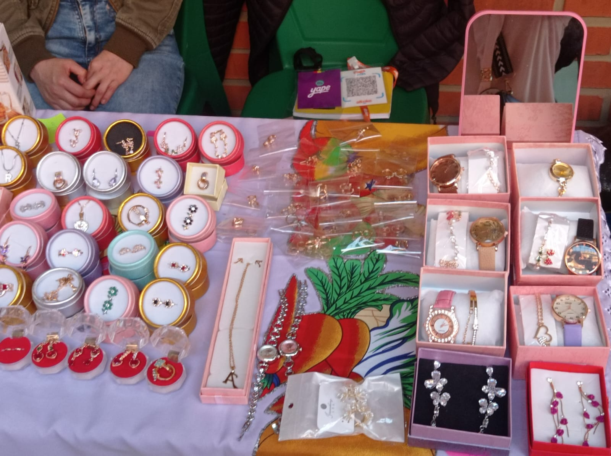
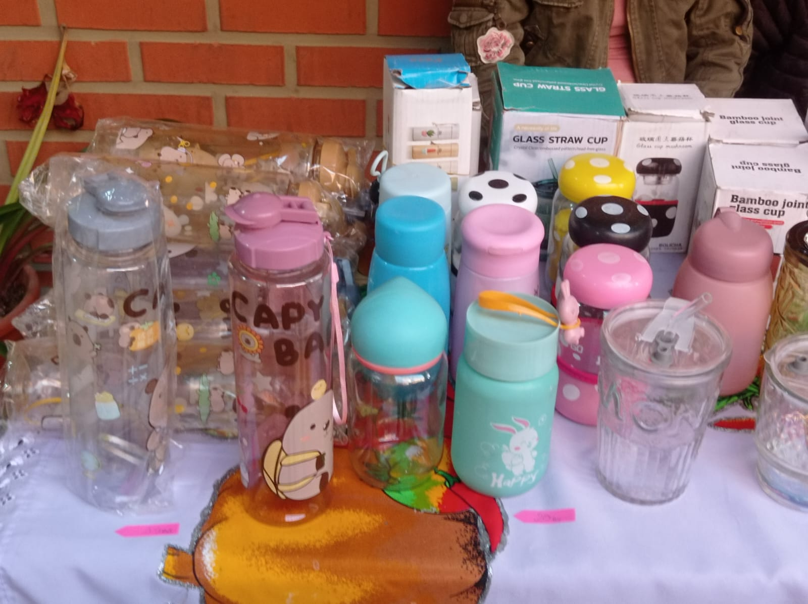
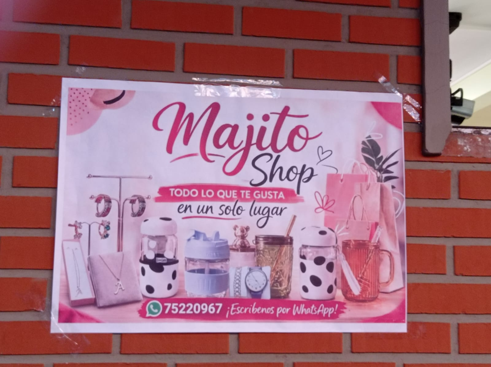

Es de una chica joven de 19 años de Sucre. Desde colegio siempre le gustaron los aretes y anillos, y ella misma se hacía sus accesorios a mano. Sus amigas le decían que los venda porque eran bonitos y a la moda.Un día se animó y con 150 Bs compró material en la Calancha y armó 20 pares de aretes. Los publicó en su TikTok y Facebook personal y los vendió todos en 2 días.Con esa platita empezó a traer más cositas, después agregó anillos, colitas, y ahora también tomatodos que están de moda para el colegio y la U. Todo lo vende por redes, hace entregas en el centro y envíos. Empezó sin tienda, solo con su celular y muchas ganas. Lo que le gusta es que puede estudiar y a la vez ganar su propio dinero.
Usa principalmente Android en su celular, porque con eso graba sus videos para TikTok, contesta en Facebook, WhatsApp y edita con CapCut.Y en su compu usa Windows 11 para hacer sus diseños, sus precios en Excel y sus fotos para el catálogo.